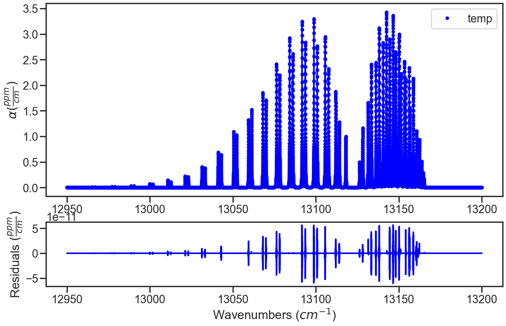

Correcting the Ideal Gas Law with Compressability Factors¶
Provided in the MATS are several examples highlighting MATS capabilities, which can be found in the MATS examples folder.
MATS has added the ability to use the compressability factor to correct the ideal gas law. This uses the NIST RefProp <https://www.nist.gov/srd/refprop>`_ offline to generate an input file that is the compressability factor for the desired sample composition on a grid of pressures (MPa) and temperatures (K). This correction is used if a compressability_file is provided in the Spectrum object generation. The rest of the script works as normal for experimental or synthetic spectra.
The compressability factor acts on the molecular density, such that
The example below is a used example that follows the script available at
Simulate Spectra with Compressability Factor¶
Module import follows from the Fitting Experimental Spectra and Fitting Synthetic Spectra examples with additional details on how to simulate spectra found in Fitting Synthetic Spectra and the source documentation.
from MATS.linelistdata import linelistdata
PARAM_LINELIST = linelistdata['O2_ABand_Drouin_2017_linelist']
wave_range = 1.5 #range outside of experimental x-range to simulate
IntensityThreshold = 1e-30 #intensities must be above this value to be simulated
Fit_Intensity = 1e-24 #intensities must be above this value for the line to be fit
order_baseline_fit = 1
sample_molefraction = {7 :0.0025142}
wave_min = 12950 #cm-1
wave_max = 13200 #cm-1
wave_space = 0.005 #cm-1
wavenumbers = np.arange(wave_min, 13158, 0.02)
The Spectrum object definitions follows as normal with the addition of the compressability_file being set to a file that contains the compressability factor as a function of temperature and pressure.
spec_1 = MATS.simulate_spectrum(PARAM_LINELIST, wave_min=wave_min, wave_max= wave_max, wave_space=wave_space,
temperature = 25, pressure = 975, SNR = None,
wing_cutoff = 25, wing_method = 'wing_cutoff', molefraction = sample_molefraction,
compressability_file = '0.25%O2inN2_297K')
spec_1.plot_wave_alpha()
The rest of the code follows as is described in the Fitting Experimental Spectra and Fitting Synthetic Spectra examples.
SPECTRA = MATS.Dataset([spec_1], 'Compressability Factor Test', PARAM_LINELIST)
BASE_LINELIST = SPECTRA.generate_baseline_paramlist()
FITPARAMS = MATS.Generate_FitParam_File(SPECTRA, PARAM_LINELIST, BASE_LINELIST, lineprofile = 'SDVP', linemixing = True,
fit_intensity = Fit_Intensity, threshold_intensity = IntensityThreshold, sim_window = wave_range,
nu_constrain = True, sw_constrain = True, gamma0_constrain = True, delta0_constrain = True,
aw_constrain = True, as_constrain = True,
nuVC_constrain = True, eta_constrain =True, linemixing_constrain = True)
FITPARAMS.generate_fit_param_linelist_from_linelist()
FITPARAMS.generate_fit_baseline_linelist()
fit_data = MATS.Fit_DataSet(SPECTRA,'Baseline_LineList', 'Parameter_LineList', minimum_parameter_fit_intensity = Fit_Intensity)
params = fit_data.generate_params()
result = fit_data.fit_data(params, wing_cutoff = 25, wing_method = 'wing_cutoff')
fit_data.residual_analysis(result, indv_resid_plot=False)
fit_data.update_params(result)
SPECTRA.generate_summary_file(save_file = True)
SPECTRA.plot_model_residuals()
In the infinite SNR case, the residuals when spectrum are simulated and evaluated using the compressability factor the residuals are the numerical errors.
if the the compressability factor for a spectrum simulated using the compressability factor is then evaluated with the molecular density calculated using the ideal gas law, then a molecular density error will be observed in the residuals.
spec_1.compressability_file = None
fit_data = MATS.Fit_DataSet(SPECTRA,'Baseline_LineList', 'Parameter_LineList', minimum_parameter_fit_intensity = Fit_Intensity)
params = fit_data.generate_params()
result = fit_data.fit_data(params, wing_cutoff = 25, wing_method = 'wing_cutoff')
fit_data.residual_analysis(result, indv_resid_plot=False)
fit_data.update_params(result)
SPECTRA.generate_summary_file(save_file = True)
SPECTRA.plot_model_residuals()